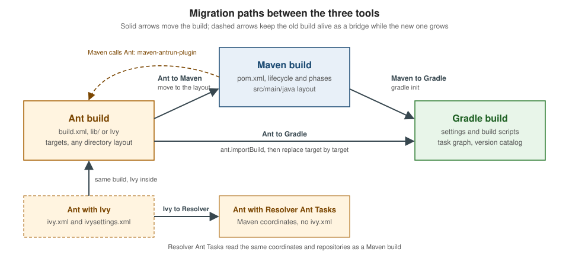

Migrating Between Tools
|
This content was generated with the assistance of AI and should be verified against the official documentation before being relied on in production. |
This page is written against Apache Ant 1.10.18 (with Apache Ivy 2.6.0 and the Maven Resolver Ant Tasks 2.0.0), Apache
Maven 3.10.0 and Gradle 9.8.1, and every build on it was run on JDK 26 on macOS, checked on 2026-10-16. The sources are
compiled with release 17, so the same builds also work on JDK 17 and 21. It covers the four moves people actually make:
Ant to Maven, Ant to Gradle, Maven to Gradle, and Ivy to the Maven Resolver Ant Tasks. The two shared pages that
come before it explain the vocabulary: Build
Automation Fundamentals and
Dependency Management Fundamentals,
and Comparing Ant, Maven & Gradle helps to
decide whether to move at all. The tool-specific companions are
Ant Deprecations & Migration,
Gradle Ant Integration and
Migrating from Maven to Gradle, which go
deeper into their half of each path.
The running scenario is tidepool, a small toolkit that predicts tide heights from harmonic constituents. This page only
needs one corner of it, a single module that holds the Station, Constituent, TideEvent and Height records and the
StationReader and TideEngine classes, with commons-csv as its only runtime dependency, a JUnit test and a data file
data/stations.csv. Paths in the program output are shortened to … where the scratch directory would otherwise fill the
line. The Gradle commands are written as ./gradlew; the outputs shown were produced by the Gradle 9.8.1 distribution
(the wrapper pins the same release and prints the same output, apart from its own download messages).

Before you migrate
A build is the one piece of the project that every developer and every pipeline runs all day, so a migration that "mostly works" is worse than none. The Gradle user manual gives the sequence that applies to all three directions: keep the old build next to the new one, do not change the source layout until you are ready to switch, and write down how you will verify that both builds produce the same artifacts. Even a different line in a JAR manifest can break a deployment.
When to move, and when to stay
| Situation | Reasonable choice | Why |
|---|---|---|
A working Ant build that rarely changes and has few dependencies |
Keep it |
Ant 1.10.18 is maintained and runs on Java 8 or later; the cost of the move is real and the benefit is small |
An Ant build with a |
Move dependencies first, to Ivy, the Maven Resolver Ant Tasks, or to Maven or Gradle |
Hand-managed JARs hide transitive dependencies and versions (see the Gradle |
An Ant build that must stay but needs Maven Central dependencies |
Ivy to Maven Resolver Ant Tasks, or keep Ivy |
Both resolve from Maven repositories; the Resolver Ant Tasks use the same resolver library as Maven |
A Maven build that fights its lifecycle (many |
Gradle |
A task graph models custom steps directly instead of binding them to fixed phases |
A Maven build that works, in a team that knows Maven |
Stay, and consider Maven 4 (release candidate) |
|
A mixed estate (some Ant, some Maven, some Gradle) |
Bridge, do not rewrite |
|
The starting point: a classic Ant build
The legacy build is a single build.xml with dependencies in a lib/ directory and the sources directly in src/, a
layout that predates the Maven convention.
legacy/
build.xml
data/stations.csv
lib/commons-csv-1.14.1.jar
src/io/tidepool/engine/StationReader.java
src/io/tidepool/engine/TideEngine.java
src/io/tidepool/model/Constituent.java
src/io/tidepool/model/Height.java
src/io/tidepool/model/Station.java
src/io/tidepool/model/TideEvent.java<?xml version="1.0" encoding="UTF-8"?>
<project name="tidepool" default="jar" basedir=".">
<property name="version" value="1.0.0"/>
<property name="src.dir" location="src"/>
<property name="lib.dir" location="lib"/>
<property name="build.dir" location="build"/>
<property name="classes.dir" location="${build.dir}/classes"/>
<path id="compile.classpath">
<fileset dir="${lib.dir}" includes="*.jar"/>
</path>
<target name="clean" description="Delete build output">
<delete dir="${build.dir}"/>
</target>
<target name="compile" description="Compile the main sources">
<mkdir dir="${classes.dir}"/>
<javac srcdir="${src.dir}" destdir="${classes.dir}" classpathref="compile.classpath"
release="17" includeantruntime="false"/>
</target>
<target name="jar" depends="compile" description="Package tidepool.jar">
<jar destfile="${build.dir}/tidepool-${version}.jar" basedir="${classes.dir}"/>
</target>
<target name="check-data" description="Fail if data/stations.csv has no header row">
<loadfile property="stations.header" srcfile="data/stations.csv">
<filterchain><headfilter lines="1"/><striplinebreaks/></filterchain>
</loadfile>
<fail message="data/stations.csv must start with the header id,name,latitude,longitude,constituents">
<condition>
<not><equals arg1="${stations.header}" arg2="id,name,latitude,longitude,constituents"/></not>
</condition>
</fail>
<echo>stations.csv header OK: ${stations.header}</echo>
</target>
</project>ant jarBuildfile: …/legacy/build.xml
compile:
[mkdir] Created dir: …/legacy/build/classes
[javac] Compiling 6 source files to …/legacy/build/classes
jar:
[jar] Building jar: …/legacy/build/tidepool-1.0.0.jar
BUILD SUCCESSFUL
Total time: 0 secondsThe jar target ran compile first because of depends; check-data is an independent target that the Maven and Gradle
sections below reuse. Run on its own it prints:
ant check-dataBuildfile: …/legacy/build.xml
check-data:
[echo] stations.csv header OK: id,name,latitude,longitude,constituents
BUILD SUCCESSFUL
Total time: 0 secondsAnt to Maven
Maven replaces the imperative build file with a declarative model: instead of writing the steps, the pom.xml declares
coordinates, dependencies and a few plugin settings, and the lifecycle supplies the steps. Three things change, in this
order of effort: the directory layout, the dependencies and the build logic.
Directory layout
Maven finds sources by convention. Ant lets every project choose, so check which properties your build.xml uses and
move the files to where Maven looks:
| Ant property or directory | Maven location | Notes |
|---|---|---|
|
|
Main Java sources; change |
test sources ( |
|
Tests run in a separate phase, not in the |
resources next to sources, or copied with |
|
Copied by |
|
declared dependencies |
No JARs are committed; they come from repositories |
|
|
Output directory, never committed |
data files used only by tooling ( |
anywhere |
Maven does not care; keep them out of |
Forgetting to move the sources is the classic mistake, and it is silent. With the pom.xml below but the sources still in
src/:
[INFO] --- compiler:3.16.0:compile (default-compile) @ tidepool ---
[INFO] Loaded 74 auto-discovered prefixes for remote repository apache.snapshots (prefixes-apache.snapshots.txt)
[INFO] No sources to compile
[INFO]
[INFO] --- resources:3.5.0:testResources (default-testResources) @ tidepool ---
[INFO] skip non existing resourceDirectory …/maven-nolayout/src/test/resources
[INFO]
[INFO] --- compiler:3.16.0:testCompile (default-testCompile) @ tidepool ---
[INFO] No sources to compile
[INFO]
[INFO] --- surefire:3.6.0:test (default-test) @ tidepool ---
[INFO] No tests to run.
[INFO]
[INFO] --- jar:3.5.1:jar (default-jar) @ tidepool ---
[WARNING] JAR will be empty - no content was marked for inclusion!
[INFO] Building jar: …/maven-nolayout/target/tidepool-1.0.0.jar
[INFO] ------------------------------------------------------------------------
[INFO] BUILD SUCCESSThe build ends with BUILD SUCCESS and an empty JAR; the single hint is [WARNING] JAR will be empty - no content was
marked for inclusion!. Gradle behaves the same way for a missing src/main/java: the compileJava task is reported as
NO-SOURCE. A migration that verifies artifacts, as described in the verification section, catches it.
Dependencies
Each JAR in lib/ becomes a coordinate groupId:artifactId:version. The name of the JAR is often enough
(commons-csv-1.14.1.jar is org.apache.commons:commons-csv:1.14.1); for a JAR with no version in its name, compute its
checksum and search Maven Central by it, or read META-INF/MANIFEST.MF and META-INF/maven/ inside it. Declare only the
direct dependencies: Maven reads the POM of each one and adds its own dependencies, so the lib/ directory of a Maven-style
build would also contain commons-io and commons-codec. The Ant build above compiled without them only because
commons-csv does not need them at compile time, but running StationReader with only that lib/ fails as soon as the
parser touches them (a small Run class that reads data/stations.csv, run with java -cp ../noclass:build/classes:lib/commons-csv-1.14.1.jar Run):
Exception in thread "main" java.lang.NoClassDefFoundError: org/apache/commons/io/output/AppendableOutputStream
at io.tidepool.engine.StationReader.read(Unknown Source)
at Run.main(Run.java:7)
…The Maven build gets the missing JARs automatically, as shown by the dependency tree further down.
<?xml version="1.0" encoding="UTF-8"?>
<project xmlns="http://maven.apache.org/POM/4.0.0"
xmlns:xsi="http://www.w3.org/2001/XMLSchema-instance"
xsi:schemaLocation="http://maven.apache.org/POM/4.0.0 https://maven.apache.org/xsd/maven-4.0.0.xsd">
<modelVersion>4.0.0</modelVersion>
<groupId>io.tidepool</groupId>
<artifactId>tidepool</artifactId>
<version>1.0.0</version>
<properties>
<maven.compiler.release>17</maven.compiler.release>
<project.build.sourceEncoding>UTF-8</project.build.sourceEncoding>
<project.build.outputTimestamp>2026-10-16T00:00:00Z</project.build.outputTimestamp>
</properties>
<dependencies>
<dependency>
<groupId>org.apache.commons</groupId>
<artifactId>commons-csv</artifactId>
<version>1.14.1</version>
</dependency>
<dependency>
<groupId>org.junit.jupiter</groupId>
<artifactId>junit-jupiter</artifactId>
<version>6.1.3</version>
<scope>test</scope>
</dependency>
</dependencies>
<build>
<plugins>
<plugin>
<groupId>org.apache.maven.plugins</groupId>
<artifactId>maven-compiler-plugin</artifactId>
<version>3.16.0</version>
</plugin>
<plugin>
<groupId>org.apache.maven.plugins</groupId>
<artifactId>maven-surefire-plugin</artifactId>
<version>3.6.0</version>
</plugin>
<plugin>
<groupId>org.apache.maven.plugins</groupId>
<artifactId>maven-jar-plugin</artifactId>
<version>3.5.1</version>
</plugin>
<plugin>
<groupId>org.apache.maven.plugins</groupId>
<artifactId>maven-resources-plugin</artifactId>
<version>3.5.0</version>
</plugin>
</plugins>
</build>
</project>The JUnit dependency has the test scope, so it never reaches the JAR; the Ant lib/ directory had no such separation.
Plugin versions are pinned, as Maven 3.10 no longer manages them in the super POM. In the POM,
project.build.outputTimestamp makes the JAR reproducible. The scope names map to Ivy configurations and Gradle
configurations in the mapping table of
Dependency Management Fundamentals.
mvn -B -ntp package…
[INFO] --- resources:3.5.0:resources (default-resources) @ tidepool ---
[INFO] skip non existing resourceDirectory …/maven/src/main/resources
[INFO]
[INFO] --- compiler:3.16.0:compile (default-compile) @ tidepool ---
[INFO] Loaded 74 auto-discovered prefixes for remote repository apache.snapshots (prefixes-apache.snapshots.txt)
[INFO] Recompiling the module because of changed source code.
[INFO] Compiling 6 source files with javac [debug release 17] to target/classes
[INFO]
[INFO] --- resources:3.5.0:testResources (default-testResources) @ tidepool ---
[INFO] skip non existing resourceDirectory …/maven/src/test/resources
[INFO]
[INFO] --- compiler:3.16.0:testCompile (default-testCompile) @ tidepool ---
[INFO] Recompiling the module because of changed dependency.
[INFO] Compiling 1 source file with javac [debug release 17] to target/test-classes
[INFO]
[INFO] --- surefire:3.6.0:test (default-test) @ tidepool ---
[INFO] Using auto detected provider org.apache.maven.surefire.junitplatform.JUnitPlatformProvider
[INFO]
[INFO] -------------------------------------------------------
[INFO] T E S T S
[INFO] -------------------------------------------------------
[INFO] Running io.tidepool.engine.StationReaderTest
[INFO] Tests run: 1, Failures: 0, Errors: 0, Skipped: 0, Time elapsed: 0.030 s -- in io.tidepool.engine.StationReaderTest
[INFO]
[INFO] Results:
[INFO]
[INFO] Tests run: 1, Failures: 0, Errors: 0, Skipped: 0
[INFO]
[INFO]
[INFO] --- jar:3.5.1:jar (default-jar) @ tidepool ---
[INFO] Building jar: …/maven/target/tidepool-1.0.0.jar
[INFO] ------------------------------------------------------------------------
[INFO] BUILD SUCCESSFrom Ant tasks to Maven plugins
| Ant task | Maven plugin goal | Gradle |
|---|---|---|
|
|
|
|
|
|
|
|
|
|
|
|
|
|
|
|
|
|
|
|
|
|
|
|
Source: Maven: Available Plugins
maven-antrun-plugin as a bridge
Not everything translates on the first day: a custom task, a data check, a legacy packaging step. maven-antrun-plugin
(3.2.0 here) has one goal, run, which runs Ant tasks from a Maven build and gives you a stepping stone: Maven owns
the lifecycle and the dependencies, and Ant keeps doing what has not been rewritten. The <target> element holds Ant
tasks inline or, as here, calls an existing target of the old build.xml through the ant task.
<plugin>
<groupId>org.apache.maven.plugins</groupId>
<artifactId>maven-antrun-plugin</artifactId>
<version>3.2.0</version>
<executions>
<execution>
<id>legacy-check-data</id>
<phase>verify</phase>
<goals>
<goal>run</goal>
</goals>
<configuration>
<target>
<ant antfile="${project.basedir}/legacy/build.xml" dir="${project.basedir}" target="check-data"/>
</target>
</configuration>
</execution>
</executions>
</plugin>mvn -B -ntp verify…
[INFO] --- jar:3.5.1:jar (default-jar) @ tidepool ---
[INFO] Building jar: …/maven-antrun/target/tidepool-1.0.0.jar
[INFO]
[INFO] --- antrun:3.2.0:run (legacy-check-data) @ tidepool ---
[INFO] Executing tasks
[WARNING] [echo] stations.csv header OK: id,name,latitude,longitude,constituents
[INFO] Executed tasks
[INFO] ------------------------------------------------------------------------
[INFO] BUILD SUCCESSTwo details deserve attention. First, Ant output arrives through Maven’s logger, and in this run the echo message appears at
WARNING level, which is not a failure. Second, the Ant version that runs
inside the plugin is the one the plugin depends on, not the one installed on the machine, so Ant features newer than the
plugin’s Ant are not available, and extra Ant tasks (JSch, JUnit launcher) must be added as plugin dependencies. The Gradle
page on Maven migration says the same from the other side: Gradle has no AntRun plugin because Ant is built in.
Source: Maven AntRun Plugin: Usage
Ant to Gradle
Gradle can import an Ant build and turn each target into a task, so the migration can be incremental: the first commit only adds the import, and every later commit replaces one target with a native task.
Importing the build with ant.importBuild
// Import every Ant target of build.xml as a Gradle task.
ant.importBuild("build.xml") { antTargetName ->
"ant-$antTargetName"
}
// Make a native Gradle lifecycle task depend on an imported Ant target.
tasks.register("assemble") {
group = "build"
description = "Builds the jar through the imported Ant build"
dependsOn("ant-jar")
}// Import every Ant target of build.xml as a Gradle task.
ant.importBuild('build.xml') { antTargetName ->
"ant-${antTargetName}".toString()
}
// Make a native Gradle lifecycle task depend on an imported Ant target.
tasks.register('assemble') {
group = 'build'
description = 'Builds the jar through the imported Ant build'
dependsOn 'ant-jar'
}./gradlew ant-clean assemble> Task :ant-clean
> Task :ant-compile
> Task :ant-jar
> Task :assemble
BUILD SUCCESSFUL in 382ms
3 actionable tasks: 3 executedThe transformer in braces renames each Ant target on import. Without it the tasks keep their Ant names, and a target that
shares its name with a Gradle task breaks the build as soon as a plugin adds that task. With the java-library plugin
applied and ant.importBuild("build.xml") without a transformer, Gradle 9.8.1 stops with:
FAILURE: Build failed with an exception.
* Where:
Build file '…/clash/build.gradle.kts' line: 2
* What went wrong:
Cannot add task 'jar' as a task with that name already exists.Ant description attributes become task descriptions, so ./gradlew tasks --all lists
ant-check-data - Fail if data/stations.csv has no header row under "Other tasks". Dependencies between targets
(depends) are kept. The output of most Ant tasks is logged at a lower level than the default: with --info the run
above also prints [ant:delete] Deleting directory …/build, [ant:mkdir] Created dir: …/build/classes and
[ant:javac] Compiling 6 source files to …/build/classes, while echo output is shown by default as [ant:echo].
The Ant properties are available as ant.properties["src.dir"] in Kotlin and ant.properties['src.dir'] in Groovy.
Importing has two limits to plan around. The imported Ant build is not supported by the configuration cache, which has
been the preferred execution mode since Gradle 9.0, so you get none of its speed until the conversion is finished (the
output of a run with --configuration-cache is shown below). And the Ant build still has to be maintained.
Replacing targets one at a time
The useful property of an imported build is that its targets are real tasks: you can change their dependencies, attach
actions, or stop depending on them. The Gradle manual describes the sequence for a library: apply the Java Library plugin,
rename the Ant build target if there is one, point the source sets at the existing layout, and rewire dependsOn. If you
have already moved the sources to the standard layout, as in the Maven section, it is shorter. In this example only
check-data is kept as an Ant target, the compile and package work is done by native tasks, and the version catalog
holds the dependency (it is the file gradle init generated in the next section).
plugins {
`java-library`
}
group = "io.tidepool"
version = "1.0.0"
repositories {
mavenCentral()
}
dependencies {
api(libs.org.apache.commons.commons.csv)
testImplementation(platform("org.junit:junit-bom:6.1.3"))
testImplementation("org.junit.jupiter:junit-jupiter")
testRuntimeOnly("org.junit.platform:junit-platform-launcher")
}
tasks.withType<JavaCompile>().configureEach {
options.release = 17
}
tasks.test {
useJUnitPlatform()
}
// Keep one legacy Ant target for now: only "check-data" is imported as a task.
ant.importBuild("build.xml") { antTargetName -> "ant-$antTargetName" }
tasks.check {
dependsOn("ant-check-data")
}plugins {
id 'java-library'
}
group = 'io.tidepool'
version = '1.0.0'
repositories {
mavenCentral()
}
dependencies {
api libs.org.apache.commons.commons.csv
testImplementation platform('org.junit:junit-bom:6.1.3')
testImplementation 'org.junit.jupiter:junit-jupiter'
testRuntimeOnly 'org.junit.platform:junit-platform-launcher'
}
tasks.withType(JavaCompile).configureEach {
options.release = 17
}
tasks.named('test') {
useJUnitPlatform()
}
// Keep one legacy Ant target for now: only "check-data" is imported as a task.
ant.importBuild('build.xml') { String antTargetName -> "ant-${antTargetName}".toString() }
tasks.named('check') {
dependsOn 'ant-check-data'
}./gradlew clean build> Task :clean UP-TO-DATE
> Task :compileJava
> Task :processResources NO-SOURCE
> Task :classes
> Task :jar
> Task :assemble
> Task :ant-check-data
[ant:echo] stations.csv header OK: id,name,latitude,longitude,constituents
> Task :compileTestJava
> Task :processTestResources NO-SOURCE
> Task :testClasses
> Task :test
> Task :check
> Task :build
BUILD SUCCESSFUL in 1s
6 actionable tasks: 5 executed, 1 up-to-dateant-compile and ant-jar are still imported but nothing depends on them any more, and they would not work with the new
layout: only targets the build still needs have to remain valid. When the last Ant target is gone, delete build.xml and
the ant.importBuild line. With the import still in place, the configuration cache cannot be used:
./gradlew --configuration-cache checkCalculating task graph as no cached configuration is available for tasks: check
> Task :ant-check-data
[ant:echo] stations.csv header OK: id,name,latitude,longitude,constituents
> Task :compileJava UP-TO-DATE
> Task :processResources NO-SOURCE
> Task :classes UP-TO-DATE
> Task :compileTestJava UP-TO-DATE
> Task :processTestResources NO-SOURCE
> Task :testClasses UP-TO-DATE
> Task :test UP-TO-DATE
> Task :check
Some tasks or features in this build are not compatible with the configuration cache.
See the complete report at file://…/gradle-hybrid/build/reports/configuration-cache/cq6p1iurtu84mf8oegrns4bjq/8ta2gavd4tua0u9k4larjub7c/configuration-cache-report.html
BUILD SUCCESSFUL in 304ms
4 actionable tasks: 1 executed, 3 up-to-date
Configuration cache disabled because incompatible task was found.The build succeeds, and Gradle falls back to running without the cache; the last line is the message to look for in CI logs.
Dependencies: lib directories and Ivy
A lib/ directory has two migration paths in the manual. The first is a flat-directory repository, which lets the build
resolve JARs named <module>-<version>.jar by coordinates and is the easiest on-ramp to managed dependencies:
plugins {
`java-library`
}
repositories {
flatDir {
name = "libs dir"
dir(file("libs"))
}
}
dependencies {
implementation(":commons-csv:1.14.1")
}
tasks.withType<JavaCompile>().configureEach {
options.release = 17
}plugins {
id 'java-library'
}
repositories {
flatDir {
name = 'libs dir'
dir file('libs')
}
}
dependencies {
implementation ':commons-csv:1.14.1'
}
tasks.withType(JavaCompile).configureEach {
options.release = 17
}./gradlew compileJava dependencies --configuration runtimeClasspath> Task :compileJava
> Task :dependencies
------------------------------------------------------------
Root project 'tidepool'
------------------------------------------------------------
runtimeClasspath - Runtime classpath of source set 'main'.
\--- :commons-csv:1.14.1
A web-based, searchable dependency report is available by adding the --scan option.
BUILD SUCCESSFUL in 482ms
2 actionable tasks: 2 executed
Consider enabling configuration cache to speed up this build: https://docs.gradle.org/9.8.1/userguide/configuration_cache_enabling.htmlCompilation works, and the runtime classpath shows the weakness of the approach: it contains one JAR, because a flat
directory has no metadata, so commons-io and commons-codec are missing and would fail at run time. Moving to
mavenCentral() fixes that, since Gradle then reads the POM of commons-csv. Un-versioned JARs have to be attached as
file dependencies (implementation(files("libs/our-custom.jar"))), which Gradle cannot check for updates or conflicts.
Ivy to Gradle is, in the words of the manual, usually straightforward, because both tools have configurations and
repositories. The three steps are to copy the <dependency> entries into a dependencies {} block using the standard
configurations of the plugins you apply, to copy any custom <configurations> that the standard ones cannot replace, and to
copy the resolvers of ivysettings.xml into repositories {}. Ivy’s three phases (configure, resolve, retrieve) become
two in Gradle: configuration and resolution happen automatically and retrieval does not exist unless you write a task,
because Gradle builds classpaths straight from its cache.
| Ivy | Gradle |
|---|---|
|
|
|
|
|
|
|
|
|
nothing to write: Gradle selects the variant of the other module that matches the configuration |
|
|
|
dynamic versions; lock them with dependency locking |
conflict managers |
|
|
not needed; use a |
|
|
Gradle can also read Ivy repositories (ivy {} in repositories {}), which is the way to keep consuming modules that an
Ivy build publishes while the producer is migrated. The same conflict and version rules are in the
Ivy conflicts and versions page.
Ivy to the Maven Resolver Ant Tasks
If the goal is only to stop checking JARs into the repository, or to leave Ivy behind without leaving Ant, the Maven
Resolver Ant Tasks (2.0.0) are the smaller step: the same Ant build, but dependency resolution done by the library that
Maven itself uses, with Maven coordinates and the Maven settings.xml (mirrors, proxies, credentials) honoured. The Ivy
version below is the Ant build of the previous sections with an ivy.xml and the ivy:retrieve and ivy:cachepath tasks.
<?xml version="1.0" encoding="UTF-8"?>
<ivy-module version="2.0">
<info organisation="io.tidepool" module="tidepool" revision="1.0.0"/>
<configurations>
<conf name="compile" description="Needed to compile the main sources"/>
<conf name="runtime" extends="compile" description="Needed at run time"/>
</configurations>
<dependencies>
<dependency org="org.apache.commons" name="commons-csv" rev="1.14.1" conf="compile->default"/>
</dependencies>
</ivy-module><?xml version="1.0" encoding="UTF-8"?>
<project name="tidepool" default="jar" basedir="." xmlns:ivy="antlib:org.apache.ivy.ant">
<property name="version" value="1.0.0"/>
<property name="build.dir" location="build"/>
<property name="classes.dir" location="${build.dir}/classes"/>
<taskdef uri="antlib:org.apache.ivy.ant" resource="org/apache/ivy/ant/antlib.xml"
classpath="${basedir}/../tools-jars/ivy-2.6.0.jar"/>
<target name="resolve" description="Retrieve compile dependencies with Ivy">
<ivy:retrieve pattern="lib/[artifact]-[revision].[ext]" conf="compile"/>
<ivy:cachepath pathid="compile.classpath" conf="compile"/>
</target>
<target name="compile" depends="resolve">
<mkdir dir="${classes.dir}"/>
<javac srcdir="src" destdir="${classes.dir}" classpathref="compile.classpath"
release="17" includeantruntime="false"/>
</target>
<target name="jar" depends="compile">
<jar destfile="${build.dir}/tidepool-${version}.jar" basedir="${classes.dir}"/>
</target>
</project>ant jarBuildfile: …/ivy/build.xml
resolve:
[ivy:retrieve] :: Apache Ivy 2.6.0 - 20260712075753 :: https://ant.apache.org/ivy/ ::
[ivy:retrieve] :: loading settings :: url = jar:file:…/tools-jars/ivy-2.6.0.jar!/org/apache/ivy/core/settings/ivysettings.xml
[ivy:retrieve] :: resolving dependencies :: io.tidepool#tidepool;1.0.0
[ivy:retrieve] confs: [compile]
[ivy:retrieve] found org.apache.commons#commons-csv;1.14.1 in public
[ivy:retrieve] found commons-io#commons-io;2.20.0 in public
[ivy:retrieve] found commons-codec#commons-codec;1.19.0 in public
[ivy:retrieve] [SUCCESSFUL ] org.apache.commons#commons-csv;1.14.1!commons-csv.jar (112ms)
…
[ivy:retrieve] :: resolution report :: resolve 1539ms :: artifacts dl 384ms
[ivy:retrieve] confs: [compile]
[ivy:retrieve] 3 artifacts copied, 0 already retrieved (976kB/3ms)conf="compile->default" asks for the default configuration of the Maven module, which for a module taken from a Maven
repository includes its runtime dependencies, so Ivy found commons-io and commons-codec as well. The Resolver Ant Tasks
version has no descriptor: the coordinate is in the build file and the <resolve> task builds the classpath and copies
the files.
<?xml version="1.0" encoding="UTF-8"?>
<project name="tidepool" default="jar" basedir="." xmlns:resolver="antlib:org.apache.maven.resolver.ant">
<property name="version" value="1.0.0"/>
<property name="build.dir" location="build"/>
<property name="classes.dir" location="${build.dir}/classes"/>
<taskdef uri="antlib:org.apache.maven.resolver.ant" resource="org/apache/maven/resolver/ant/antlib.xml"
classpath="${basedir}/../tools-jars/maven-resolver-ant-tasks-2.0.0-uber.jar"/>
<target name="resolve" description="Resolve compile dependencies with the Maven Resolver Ant Tasks">
<resolver:resolve>
<dependencies>
<dependency coords="org.apache.commons:commons-csv:1.14.1"/>
</dependencies>
<path refid="compile.classpath" classpath="compile"/>
<files dir="lib" layout="{artifactId}-{version}.{extension}" classpath="runtime"/>
</resolver:resolve>
</target>
<target name="compile" depends="resolve">
<mkdir dir="${classes.dir}"/>
<javac srcdir="src" destdir="${classes.dir}" classpathref="compile.classpath"
release="17" includeantruntime="false"/>
</target>
<target name="jar" depends="compile">
<jar destfile="${build.dir}/tidepool-${version}.jar" basedir="${classes.dir}"/>
</target>
</project>Buildfile: …/resolver/build.xml
resolve:
[resolver:resolve] Resolving artifacts
compile:
[mkdir] Created dir: …/resolver/build/classes
[javac] Compiling 6 source files to …/resolver/build/classes
jar:
[jar] Building jar: …/resolver/build/tidepool-1.0.0.jar
BUILD SUCCESSFUL
Total time: 0 secondsBoth builds retrieved the same three files into lib/: commons-codec-1.19.0.jar, commons-csv-1.14.1.jar and
commons-io-2.20.0.jar.
| Ivy | Maven Resolver Ant Tasks |
|---|---|
|
|
configurations |
scopes; |
|
|
|
|
|
|
|
|
|
Maven version ranges and SNAPSHOT versions |
resolution report and conflict managers |
none: Maven’s nearest-wins mediation, with exclusions and global exclusions |
What you give up is Ivy’s configuration model (arbitrary configurations, mappings between them) and its conflict managers;
what you gain is one dependency vocabulary shared with Maven, and the ability to resolve from pom.xml directly
(<dependencies pomRef="pom"/>). The Ivy project’s own
Ivy and Maven comparison describes the differences from Ivy’s point of view.
Maven to Gradle
Automatic conversion with gradle init
gradle init run in a directory with a pom.xml offers to convert the build, and --type pom selects the conversion without
a question. The conversion is an incubating feature in Gradle 9.8.1 (the output says so). It reads the POM, writes the
Gradle files, and leaves the Maven files untouched, so both builds can run side by side.
gradle init --type pom --dsl kotlin --use-defaults…
> Task :init
Maven to Gradle conversion is an incubating feature.
For more information, please refer to https://docs.gradle.org/9.8.1/userguide/migrating_from_maven.html in the Gradle documentation.
BUILD SUCCESSFUL in 3s
1 actionable task: 1 executedIt created build.gradle.kts, settings.gradle.kts, gradle.properties, gradle/libs.versions.toml and the wrapper.
The version catalog, which highlight.js in the documentation UI cannot colour, is:
# This file was generated by the Gradle 'init' task.
# https://docs.gradle.org/current/userguide/version_catalogs.html#sec::toml-dependencies-format
[versions]
org-apache-commons-commons-csv = "1.14.1"
org-junit-jupiter-junit-jupiter = "6.1.3"
[libraries]
org-apache-commons-commons-csv = { module = "org.apache.commons:commons-csv", version.ref = "org-apache-commons-commons-csv" }
org-junit-jupiter-junit-jupiter = { module = "org.junit.jupiter:junit-jupiter", version.ref = "org-junit-jupiter-junit-jupiter" }/*
* This file was generated by the Gradle 'init' task.
*/
plugins {
`java-library`
`maven-publish`
}
repositories {
mavenLocal()
maven {
url = uri("https://repo.maven.apache.org/maven2/")
}
}
dependencies {
api(libs.org.apache.commons.commons.csv)
testImplementation(libs.org.junit.jupiter.junit.jupiter)
}
group = "io.tidepool"
version = "1.0.0"
description = "tidepool"
java.sourceCompatibility = JavaVersion.VERSION_1_8
publishing {
publications.create<MavenPublication>("maven") {
from(components["java"])
}
}
tasks.withType<JavaCompile>() {
options.encoding = "UTF-8"
}
tasks.withType<Javadoc>() {
options.encoding = "UTF-8"
}Four things in this output need review before trusting it. The Maven property maven.compiler.release was not
converted: the build compiles for Java 8 (java.sourceCompatibility = JavaVersion.VERSION_1_8). mavenLocal() is the first
repository, which makes the build depend on whatever a previous Maven build installed into ~/.m2. The commons-csv dependency
became api although this is not a library with consumers of its types; implementation is the default recommendation.
And gradle.properties enables the configuration cache (org.gradle.configuration-cache=true), which is the right
direction, but the generated wrapper properties have no distributionSha256Sum; add it, as explained in
Supply Chain Security. The first of these makes the
first build fail on JDK 26, because the sources use records and a switch expression:
./gradlew build> Task :compileJava FAILED
warning: [options] source value 8 is obsolete and will be removed in a future release
warning: [options] target value 8 is obsolete and will be removed in a future release
warning: [options] To suppress warnings about obsolete options, use -Xlint:-options.
…/src/main/java/io/tidepool/model/Constituent.java:4: error: records are not supported in -source 8
public record Constituent(String name, double amplitude, double phase) {
^
(use -source 16 or higher to enable records)
…
6 errors
3 warnings
…
FAILURE: Build failed with an exception.
* What went wrong:
Execution failed for task ':compileJava' (registered by plugin class 'org.gradle.api.plugins.JavaBasePlugin').
> Compilation failed; see the compiler output below.
…(The output is trimmed with ….) Once the compilation is fixed, the next failures are in the test task, and there are
two of them. The generated script never selects the JUnit Platform. Gradle does not discover JUnit Jupiter tests unless
the test task selects the JUnit Platform with useJUnitPlatform(), and Gradle 9 fails a test task that has test sources but discovers no tests (the same build with the line
removed, run on 9.8.1):
…
> Task :test FAILED
FAILURE: Build failed with an exception.
* What went wrong:
Execution failed for task ':test'.
> There are test sources present and no filters are applied, but the test task did not discover any tests to execute. This is likely due to a misconfiguration. Please check your test configuration. If this is not a misconfiguration, this error can be disabled by setting the 'failOnNoDiscoveredTests' property to false.
…
BUILD FAILED in 273msWith useJUnitPlatform() in place, the Gradle test executor needs the JUnit Platform launcher on the test runtime
classpath, which Maven Surefire brings by itself. Without it:
…
> Task :test FAILED
Gradle Test Executor 1 FAILED
org.gradle.api.internal.tasks.testing.TestSuiteExecutionException at SuiteTestDefinitionProcessor.java:45
Caused by: org.gradle.api.internal.tasks.testing.RequiresTestFrameworkTestDefinitionProcessor$TestFrameworkNotAvailableException at JUnitPlatformTestDefinitionProcessor.java:101
…
Execution failed for task ':test' (registered by plugin 'org.gradle.jvm-test-suite').
> Test process encountered an unexpected problem.
> Could not start Gradle Test Executor 1.
> Failed to load JUnit Platform. Please ensure that all JUnit Platform dependencies are available on the test's runtime classpath, including the JUnit Platform launcher.
…
BUILD FAILED in 6sA fixed build script, which sets options.release, uses mavenCentral(), keeps the converted libs accessors, declares the
launcher and selects the JUnit Platform:
plugins {
`java-library`
`maven-publish`
}
repositories {
mavenCentral()
}
dependencies {
api(libs.org.apache.commons.commons.csv)
testImplementation(libs.org.junit.jupiter.junit.jupiter)
testRuntimeOnly("org.junit.platform:junit-platform-launcher")
}
group = "io.tidepool"
version = "1.0.0"
description = "tidepool"
tasks.withType<JavaCompile>().configureEach {
options.encoding = "UTF-8"
options.release = 17
}
tasks.withType<Javadoc>().configureEach {
options.encoding = "UTF-8"
}
tasks.test {
useJUnitPlatform()
}
publishing {
publications.create<MavenPublication>("maven") {
from(components["java"])
}
}plugins {
id 'java-library'
id 'maven-publish'
}
repositories {
mavenCentral()
}
dependencies {
api libs.org.apache.commons.commons.csv
testImplementation libs.org.junit.jupiter.junit.jupiter
testRuntimeOnly 'org.junit.platform:junit-platform-launcher'
}
group = 'io.tidepool'
version = '1.0.0'
description = 'tidepool'
tasks.withType(JavaCompile).configureEach {
options.encoding = 'UTF-8'
options.release = 17
}
tasks.withType(Javadoc).configureEach {
options.encoding = 'UTF-8'
}
tasks.named('test') {
useJUnitPlatform()
}
publishing {
publications {
maven(MavenPublication) {
from components.java
}
}
}Both build scripts use the same libs.versions.toml. The Kotlin version ran like this:
./gradlew buildCalculating task graph as configuration cache cannot be reused because file 'build.gradle.kts' has changed.
> Task :processResources NO-SOURCE
> Task :processTestResources NO-SOURCE
> Task :compileJava
> Task :classes
> Task :jar
> Task :assemble
> Task :compileTestJava
> Task :testClasses
> Task :test
> Task :check
> Task :build
BUILD SUCCESSFUL in 1s
4 actionable tasks: 4 executed
Configuration cache entry stored.For a multi-module
POM, gradle init creates a settings.gradle.kts with an include(...) per <module> and one build script per module,
and assemblies, shade configurations and any custom plugin are not converted and must be rewritten by hand.
Lifecycle and scope mapping
Maven’s build lifecycle is a fixed list of phases; Gradle has no phases but its base plugin provides lifecycle tasks that line up with the main ones:
| Maven phase | Gradle task |
|---|---|
|
|
|
|
|
|
|
|
|
|
|
|
|
|
Dependency scopes map to configurations: compile to implementation or api, runtime to runtimeOnly, test to
testImplementation and testRuntimeOnly, provided to compileOnly (the War plugin adds providedCompile and
providedRuntime), and import to a platform(). Mediation differs: Maven picks the nearest definition, Gradle the highest
version, so a migrated build can resolve different versions even with identical declarations; check with the
dependency lists described below.
BOMs, profiles, filtering and integration tests
These four are the parts of a POM that gradle init converts poorly or not at all, so here is one Maven build that uses
all four and its Gradle translation. The Maven project imports a BOM, activates a profile with -Pci, filters a
properties file, and runs GreeterIT with Failsafe.
<?xml version="1.0" encoding="UTF-8"?>
<project xmlns="http://maven.apache.org/POM/4.0.0"
xmlns:xsi="http://www.w3.org/2001/XMLSchema-instance"
xsi:schemaLocation="http://maven.apache.org/POM/4.0.0 https://maven.apache.org/xsd/maven-4.0.0.xsd">
<modelVersion>4.0.0</modelVersion>
<groupId>io.tidepool</groupId>
<artifactId>features</artifactId>
<version>1.0.0</version>
<properties>
<maven.compiler.release>17</maven.compiler.release>
<project.build.sourceEncoding>UTF-8</project.build.sourceEncoding>
<deploy.env>dev</deploy.env>
</properties>
<dependencyManagement>
<dependencies>
<dependency>
<groupId>org.junit</groupId>
<artifactId>junit-bom</artifactId>
<version>6.1.3</version>
<type>pom</type>
<scope>import</scope>
</dependency>
</dependencies>
</dependencyManagement>
<dependencies>
<dependency>
<groupId>org.junit.jupiter</groupId>
<artifactId>junit-jupiter</artifactId>
<scope>test</scope>
</dependency>
</dependencies>
<profiles>
<profile>
<id>ci</id>
<properties>
<deploy.env>ci</deploy.env>
</properties>
</profile>
</profiles>
<build>
<resources>
<resource>
<directory>src/main/resources</directory>
<filtering>true</filtering>
</resource>
</resources>
<plugins>
<plugin>
<groupId>org.apache.maven.plugins</groupId>
<artifactId>maven-compiler-plugin</artifactId>
<version>3.16.0</version>
</plugin>
<plugin>
<groupId>org.apache.maven.plugins</groupId>
<artifactId>maven-resources-plugin</artifactId>
<version>3.5.0</version>
<configuration>
<propertiesEncoding>UTF-8</propertiesEncoding>
</configuration>
</plugin>
<plugin>
<groupId>org.apache.maven.plugins</groupId>
<artifactId>maven-surefire-plugin</artifactId>
<version>3.6.0</version>
</plugin>
<plugin>
<groupId>org.apache.maven.plugins</groupId>
<artifactId>maven-jar-plugin</artifactId>
<version>3.5.1</version>
</plugin>
<plugin>
<groupId>org.apache.maven.plugins</groupId>
<artifactId>maven-failsafe-plugin</artifactId>
<version>3.6.0</version>
<executions>
<execution>
<goals>
<goal>integration-test</goal>
<goal>verify</goal>
</goals>
</execution>
</executions>
</plugin>
</plugins>
</build>
</project>app.version=${project.version}
app.env=${deploy.env}mvn -B -ntp verify -Pci…
[INFO] --- resources:3.5.0:resources (default-resources) @ features ---
[INFO] Copying 1 resource from src/main/resources to target/classes
[INFO]
[INFO] --- compiler:3.16.0:compile (default-compile) @ features ---
[INFO] Loaded 74 auto-discovered prefixes for remote repository apache.snapshots (prefixes-apache.snapshots.txt)
[INFO] Recompiling the module because of changed source code.
[INFO] Compiling 1 source file with javac [debug release 17] to target/classes
[INFO]
[INFO] --- resources:3.5.0:testResources (default-testResources) @ features ---
[INFO] skip non existing resourceDirectory …/feat-maven/src/test/resources
[INFO]
[INFO] --- compiler:3.16.0:testCompile (default-testCompile) @ features ---
[INFO] Recompiling the module because of changed dependency.
[INFO] Compiling 2 source files with javac [debug release 17] to target/test-classes
[INFO]
[INFO] --- surefire:3.6.0:test (default-test) @ features ---
[INFO] Using auto detected provider org.apache.maven.surefire.junitplatform.JUnitPlatformProvider
[INFO]
[INFO] -------------------------------------------------------
[INFO] T E S T S
[INFO] -------------------------------------------------------
[INFO] Running demo.GreeterTest
[INFO] Tests run: 1, Failures: 0, Errors: 0, Skipped: 0, Time elapsed: 0.021 s -- in demo.GreeterTest
[INFO]
[INFO] Results:
[INFO]
[INFO] Tests run: 1, Failures: 0, Errors: 0, Skipped: 0
[INFO]
[INFO]
[INFO] --- jar:3.5.1:jar (default-jar) @ features ---
[INFO] Building jar: …/feat-maven/target/features-1.0.0.jar
[INFO]
[INFO] --- failsafe:3.6.0:integration-test (default) @ features ---
[INFO] Using auto detected provider org.apache.maven.surefire.junitplatform.JUnitPlatformProvider
[INFO]
[INFO] -------------------------------------------------------
[INFO] T E S T S
[INFO] -------------------------------------------------------
[INFO] Running demo.GreeterIT
[INFO] Tests run: 1, Failures: 0, Errors: 0, Skipped: 0, Time elapsed: 0.016 s -- in demo.GreeterIT
[INFO]
[INFO] Results:
[INFO]
[INFO] Tests run: 1, Failures: 0, Errors: 0, Skipped: 0
[INFO]
[INFO]
[INFO] --- failsafe:3.6.0:verify (default) @ features ---
[INFO] ------------------------------------------------------------------------
[INFO] BUILD SUCCESSResulting target/classes/app.properties:
app.version=1.0.0
app.env=ciThe <propertiesEncoding> setting in the POM matters: without it Maven 3.10.0 prints The encoding used to copy filtered
properties files has not been set and falls back to the default of the platform. The Gradle build maps each part as follows: the BOM import becomes a platform()
dependency, the profile becomes a project property tested with providers.gradleProperty, filtering becomes expand
on processResources, and Failsafe becomes a second JVM test suite attached to check.
plugins {
`java-library`
}
group = "io.tidepool"
version = "1.0.0"
repositories {
mavenCentral()
}
tasks.withType<JavaCompile>().configureEach {
options.release = 17
}
// Maven profile "ci" -> a property: run with -Pci
val deployEnv = if (providers.gradleProperty("ci").isPresent) "ci" else "dev"
val projectVersion = project.version.toString()
// Maven resource filtering -> expand()
tasks.processResources {
inputs.property("deployEnv", deployEnv)
inputs.property("projectVersion", projectVersion)
filesMatching("app.properties") {
expand("version" to projectVersion, "deployEnv" to deployEnv)
}
}
// Maven BOM import (scope "import") -> a platform; Maven failsafe -> a second test suite
testing {
suites {
named<JvmTestSuite>("test") {
useJUnitJupiter()
dependencies {
implementation(platform("org.junit:junit-bom:6.1.3"))
}
}
register<JvmTestSuite>("integrationTest") {
useJUnitJupiter()
dependencies {
implementation(project())
implementation(platform("org.junit:junit-bom:6.1.3"))
}
}
}
}
tasks.check {
dependsOn(testing.suites.named("integrationTest"))
}plugins {
id 'java-library'
}
group = 'io.tidepool'
version = '1.0.0'
repositories {
mavenCentral()
}
tasks.withType(JavaCompile).configureEach {
options.release = 17
}
// Maven profile "ci" -> a property: run with -Pci
def deployEnv = providers.gradleProperty('ci').present ? 'ci' : 'dev'
def projectVersion = project.version.toString()
// Maven resource filtering -> expand()
tasks.named('processResources') {
inputs.property('deployEnv', deployEnv)
inputs.property('projectVersion', projectVersion)
filesMatching('app.properties') {
expand(version: projectVersion, deployEnv: deployEnv)
}
}
// Maven BOM import (scope "import") -> a platform; Maven failsafe -> a second test suite
testing {
suites {
test {
useJUnitJupiter()
dependencies {
implementation platform('org.junit:junit-bom:6.1.3')
}
}
integrationTest(JvmTestSuite) {
useJUnitJupiter()
dependencies {
implementation project()
implementation platform('org.junit:junit-bom:6.1.3')
}
}
}
}
tasks.named('check') {
dependsOn testing.suites.integrationTest
}app.version=${version}
app.env=${deployEnv}./gradlew clean build -Pci> Task :clean
> Task :compileJava
> Task :processResources
> Task :classes
> Task :jar
> Task :assemble
> Task :compileIntegrationTestJava
> Task :processIntegrationTestResources NO-SOURCE
> Task :integrationTestClasses
> Task :integrationTest
> Task :compileTestJava
> Task :processTestResources NO-SOURCE
> Task :testClasses
> Task :test
> Task :check
> Task :build
BUILD SUCCESSFUL in 1s
8 actionable tasks: 8 executed
Consider enabling configuration cache to speed up this build: https://docs.gradle.org/9.8.1/userguide/configuration_cache_enabling.htmlResulting build/resources/main/app.properties:
app.version=1.0.0
app.env=ciPoints that surprise Maven users:
-
-Pcimeans different things. In Maven it activates the profile with idci; in Gradle it sets the project propertyci, which any build logic can test. Gradle has no profiles; the manual shows the same effect with per-environment secondary scripts selected by a property. -
expandtreats the file as a template of the GroovySimpleTemplateEngine, so every$in the file is interpreted; usefilterwithReplaceTokensfor files that contain literal dollars. The twoinputs.propertylines are there so that a change of version or profile re-runsprocessResources. -
Reading
project.versioninside theexpandaction is a deprecated use ofTask.projectat execution time (the build printed the deprecation warning until the value was captured in a localval/def). It will fail in Gradle 10 and it prevents the configuration cache. -
The two test suites keep integration tests in
src/integrationTest/java, not in*ITfile names; and unlike Failsafe, a failing suite stops the build unlessignoreFailuresis set. -
The top-level
named<JvmTestSuite>("test")form replacesval test by getting(JvmTestSuite::class): the delegate form is deprecated since Gradle 9.6.
Source: Gradle User Manual: Migrating from Maven, using BOMs; Gradle User Manual: Migrating from Maven, profiles and properties; Gradle User Manual: Migrating from Maven, filtering resources; Gradle User Manual: Migrating from Maven, integration tests; Gradle User Manual: JVM Test Suite plugin, declaring an additional test suite; Maven Resources Plugin: filtering; Maven Failsafe Plugin
Plugins and Ant goals
Plugins that wrap a tool with its own configuration (Checkstyle, JaCoCo, Shade and its Gradle counterpart Shadow) migrate by
carrying over the plugin’s configuration block and ignoring the executions and phase bindings, which Gradle does not
need. antrun executions become the built-in ant object (ant.importBuild, or inline ant.withGroovyBuilder), as the
manual notes. Custom Maven plugins have to be rewritten as Gradle plugins or tasks; see
Writing Maven Plugins and
Writing Custom Gradle Tasks.
Verifying a migration
The Gradle manual calls a way to verify that both builds produce the same artifacts "vitally important", and the rule applies to every direction. The build-comparison plugin that Gradle used to ship for this was removed in Gradle 6.0; the upgrade guide points to Build Scans, where two scans of builds can be compared in Develocity (not run here). Without it, three cheap checks give most of the confidence.
Compare artifacts
List the entries of both JARs and diff the lists. Here the Maven JAR is compared with the JAR produced by the converted Gradle build:
jar tf maven/target/tidepool-1.0.0.jar | sort > maven-entries.txt
jar tf mvn2gradle/build/libs/tidepool-1.0.0.jar | sort > gradle-entries.txt
diff maven-entries.txt gradle-entries.txt3,7d2
< META-INF/maven/
< META-INF/maven/io.tidepool/
< META-INF/maven/io.tidepool/tidepool/
< META-INF/maven/io.tidepool/tidepool/pom.properties
< META-INF/maven/io.tidepool/tidepool/pom.xmlThe lines marked < exist only in the Maven JAR. The Gradle jar task does not add META-INF/maven/…/pom.xml
and pom.properties, which maven-archiver writes. If a consumer reads them (some tools do, to find the coordinates
of a JAR), add them in the Gradle build; if not, document the difference. The same diff between the Ant JAR and the
Maven JAR shows the same five lines and nothing else:
2a3,7
> META-INF/maven/
> META-INF/maven/io.tidepool/
> META-INF/maven/io.tidepool/tidepool/
> META-INF/maven/io.tidepool/tidepool/pom.properties
> META-INF/maven/io.tidepool/tidepool/pom.xmlAlso compare manifests (unzip -p x.jar META-INF/MANIFEST.MF), the checksums of the files inside if the build is
reproducible, and the size. Reproducible archives are the default in Gradle since 9.0 and Maven produces them when
project.build.outputTimestamp is set; with both in place, a checksum comparison of the unzipped contents becomes meaningful.
Compare dependency lists
Compare what each tool resolves for the runtime classpath, not what you declared.
mvn -B -ntp dependency:tree -Dscope=runtime
./gradlew dependencies --configuration runtimeClasspath[INFO] --- dependency:3.11.0:tree (default-cli) @ tidepool ---
[INFO] io.tidepool:tidepool:jar:1.0.0
[INFO] \- org.apache.commons:commons-csv:jar:1.14.1:compile
[INFO] +- commons-io:commons-io:jar:2.20.0:compile
[INFO] \- commons-codec:commons-codec:jar:1.19.0:compile
------------------------------------------------------------
Root project 'tidepool'
------------------------------------------------------------
runtimeClasspath - Runtime classpath of source set 'main'.
\--- org.apache.commons:commons-csv:1.14.1
+--- commons-io:commons-io:2.20.0
\--- commons-codec:commons-codec:1.19.0Both resolve commons-io:2.20.0 and commons-codec:1.19.0 under commons-csv:1.14.1. A difference here, usually
because of nearest-wins against highest-version conflict resolution, is the most common reason why a migrated build runs
differently. When it appears, add a constraint (or dependencyManagement on the Maven side) rather than an exclusion, and
read the mediation comparison.
Compare test results
Surefire writes target/surefire-reports/TEST-*.xml, Gradle writes build/test-results/test/TEST-*.xml, and both use the
JUnit XML format, so the counts can be compared with one grep:
maven/target/surefire-reports/TEST-io.tidepool.engine.StationReaderTest.xml
name="io.tidepool.engine.StationReaderTest" tests="1" errors="0" skipped="0" failures="0"
mvn2gradle/build/test-results/test/TEST-io.tidepool.engine.StationReaderTest.xml
name="io.tidepool.engine.StationReaderTest" tests="1" skipped="0" failures="0" errors="0"Compare the number of tests, not only the success. Gradle 9 fails a test task that finds sources but no tests, but a wrong
test source directory, a filter that matches nothing or a skipped phase can still end with a green build and zero tests,
as the Maven No tests to run. line in the empty-layout example above shows. In CI, fail the job when the number of
executed tests drops.
Pitfalls collected
| Symptom | Cause and fix |
|---|---|
|
The sources are not in |
|
The Maven |
|
Add |
|
Call |
|
|
|
An imported Ant target has the name of a task a plugin adds; rename it with the transformer of |
A different dependency version after migrating |
Nearest wins in Maven, highest wins in Gradle; add a constraint or |
Transitive dependencies missing at run time from a |
A flat directory has no metadata; use a real repository |
|
Read the value at configuration time into a local variable |
Ant |
Do not; resolve them from a repository or install them into the local repository |
Where the books are outdated
The three books are cited on the section bibliography. For migrations, they describe the tools of their day:
-
Java Development with Ant (Ant 1.5, 2002) predates Ivy, so its builds manage dependencies by hand and it looks to Maven 1 and Centipede for the future; today Ant’s dependency management is Ivy 2.6.0 or the Maven Resolver Ant Tasks 2.0.0, and a
lib/directory is the legacy case this page starts from. -
Apache Maven 2 Effective Implementation (Maven 2.2, 2009) assumes the Maven 2 layout and plugin versions; Maven 2 has been end of life since 2014, plugins must have their versions pinned, and Maven 3.10.0 and 3.9.16 are the maintained lines, with Maven 4 at 4.0.0-rc-7 (release candidate).
-
Gradle in Action (Gradle 1.7, 2014) shows
maven2gradleand the<<task operator; the Maven conversion isgradle initnow,<<was removed in Gradle 5.0, thecompileandtestCompileconfigurations were removed in 7.0, and the build-comparison plugin was removed in 6.0.